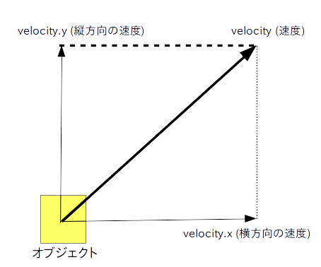

次にキャラクターのオブジェクトを動かしてみたいと思います。
オブジェクトを動かす方法は色々ありますが、今回は物理演算エンジンを使って動かしてみたいと思います。
そのためにはまず、以下の手順で「Rigidbody 2D」というコンポーネントをオブジェクトにアタッチします(※)。
※ コンポーネント(Component)は各オブジェクトの振る舞いを定めるメソッドやプロパティ(＝パラメータ)のグループのことです。
コンポーネントをオブジェクトにくっつけることをアタッチと言います。
例えばこれまでのページで使ってきた Transform はオブジェクトの位置やサイズ、向きを定めるコンポーネントで、Sprite Renderer は画像を描画するコンポーネントです。
今回使う Rigidbody 2D はアタッチするオブジェクトの速度や重さ、重力などを定めるコンポーネントです。
Hierarchy ウィンドウで対象のオブジェクトを選択する。
Inspector ウィンドウの Add Component ボタンを押してメニューを表示する。
Physics 2D → Rigidbody 2D を選択すると Inspector ウィンドウに Rigidbody 2D の項目が現れる。
重力が必要ない場合は Rigidbody 2D の Gravity Scale プロパティの値を 0 にする。
他のオブジェクトと衝突した時に回転させたくない場合は、Constraints → Freeze Rotation → Z プロパティをチェックする。
ただし Rigidbody 2D をアタッチしただけでは任意の方向にオブジェクトを動かす事は出来ませんので、次は「Script」コンポーネントもアタッチします(※)。
※ Script コンポーネントの実体は C# 又は JavaScript で書かれたスクリプトファイルです。今回は C# の方を使います。
Assets フォルダで右クリックし、Create → C# Script を選ぶと C# のスクリプトファイルが新規作成されるので、適切なファイル名に変更する。
Hierarchy ウィンドウでスクリプトをアタッチしたいオブジェクトを選択する。
Assets フォルダの中にある、先ほど作成したスクリプトファイルを Inspector ウィンドウの上に DnD するとアタッチされる。
Assets フォルダの中のスクリプトファイルをダブルクリックするとエディタが起動する。
スクリプト内に Start、Update というメソッド(※)が含まれている事を確認する。
※ Start メソッドはオブジェクトが表示される前に一度だけ呼び出される初期化用メソッドで、Update は描画フレームごとに繰り返し呼び出されるメソッドです。
では準備が済んだので実際にオブジェクトを動かしてみましょう。
オブジェクトを動かすためには Rigidbody 2D コンポーネント の velocity (ベロシティ) プロパティに値をセットします。
この velocity は日本語では「速度」を意味する 2 次元ベクトルで、更に「velocity.x」と「velocity.y」というプロパティに分かれます。
velocity.x は横方向の速度、velocity.y は縦方向の速度であり、それらに指定した方向と速さでオブジェクトが動きます(図1)。

ところがこの velociy の値は Inspector ウィンドウから変更出来ませんので、以下の様にしてスクリプトの中でセットする必要があります。
float speed = 移動スピード; float x = 横方向の移動量; float y = 縦方向の移動量; Vector2 v = new Vector2( x, y ).normalized; // ※ .normalized はベクトル v を長さ 1 に正規化するの意味 GetComponent<Rigidbody2D>().velocity = v * speed;
なお、障害物にぶつかったり、摩擦が無い限りは一度 velocity を設定すればその方向に動き続けます。
また重力が 0 で無い時は重力の影響も受けます。
例えばあるオブジェクトを(重力が 0 なら) 斜め右上 45 度の方向に速度 2.0 で動かしたい場合はソース 1 の様にスクリプト内に書きます。
float speed = 2.0f; // ※ float 型変数に定数を代入する時は後ろに f を付ける float x = 1.0f; float y = 1.0f; Vector2 v = new Vector2( x, y ).normalized; // ※ .normalized はベクトル v を長さ 1 に正規化するの意味 GetComponent<Rigidbody2D>().velocity = v * speed;
さてコーディングが済んだら以下の手順でプログラムを実行してオブジェクトを動かしてみましょう。
スクリプトを上書き保存して Unity エディタの画面に戻ると自動でコンパイルされる。エラーが出たら修正する。
上部にあるのうち一番左の再生ボタンを押すと GAME ビューに画面が切り替わってプログラムが実行される。
もう一度再生ボタンを押すと停止する。